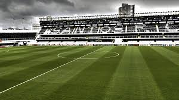

Foi no início do século XX que a cidade de Santos começou a realmente ser de grande importância para o Brasil. O porto despontava como um dos maiores do mundo. Por ele, passava a maior parte do café, produto forte na época, exportado pelo país. A vida social do município crescia rápido movida ao dinheiro dos barões do café e de seus negócios milionários com o porto. Em 1912, Santos já era a principal cidade exportadora de café do mundo.[1] Os negócios iam bem e a cidade atraía cada vez mais o dinheiro dos fazendeiros do interior. Apesar de na época os esportes aquáticos tais como o remo serem os mais praticados pelos jovens, já havia equipes da cidade fortes o bastante para disputarem com destaque o Campeonato Paulista de Futebol (criado em 1902): o Sport Clube Americano, fundado em 1903 e o Clube Atlético Internacional, fundado em 1902. O Internacional foi extinto em 1910 e o Americano mudou sua sede para São Paulo, deixando alguns praticantes descontentes e que decidiram então criar o seu próprio clube na cidade.
